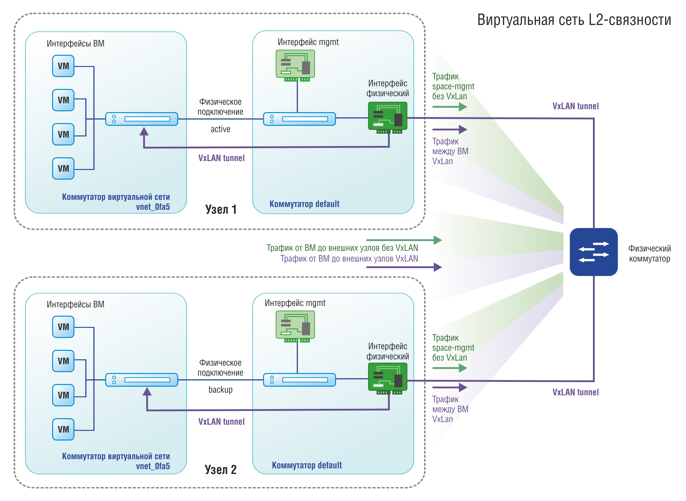

Сурцов Владимир Владимирович
Виртуальные сети — это программно-определяемые сетевые структуры, которые создаются и функционируют на базе физических сетевых ресурсов, но реализуются с помощью средств виртуализации. В облачных инфраструктурах виртуальные сети позволяют абстрагироваться от физического оборудования и строить гибкие, масштабируемые и безопасные сетевые конфигурации, полностью управляемые программно.
Виртуальные сети являются ключевым компонентом облачных платформ, поскольку именно они обеспечивают взаимодействие между виртуальными машинами, контейнерами, хранилищами данных и внешними сетями. Благодаря виртуальным сетям возможно:

Программные аналоги физических коммутаторов, обеспечивающие связь между виртуальными машинами внутри одного хоста или между разными хостами.
Управляют передачей данных на уровне второго уровня модели OSI (L2), обеспечивают изоляцию трафика, поддерживают VLAN и другие механизмы сегментации.
Программные устройства, отвечающие за маршрутизацию трафика между подсетями, виртуальными сетями и внешними сетями.
Работают на третьем уровне модели OSI (L3), поддерживают статическую и динамическую маршрутизацию, NAT, VPN и другие сетевые функции.
Распределяют входящий трафик между несколькими виртуальными машинами или сервисами для повышения отказоустойчивости и производительности.
Могут работать на разных уровнях (L4 — транспортный, L7 — прикладной), поддерживают проверку состояния серверов, SSL-терминацию и другие современные функции.
Виртуальные сети делятся на подсети для логической организации ресурсов, повышения безопасности и упрощения управления.
Каждая подсеть может иметь свои правила доступа и маршрутизации.
Для каждой подсети выделяется свой диапазон частных IP-адресов (например, по стандарту RFC1918).
Возможно использование статических и динамических адресов (через DHCP).
Определяют пути передачи трафика между подсетями, виртуальными сетями и внешними сетями.
Могут содержать статические маршруты, правила NAT, маршруты к VPN-шлюзам и другим сетевым сервисам.